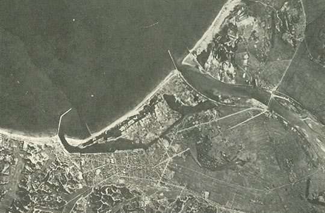
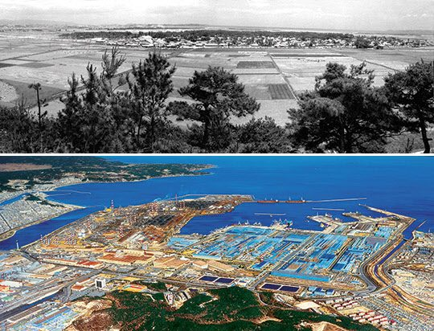
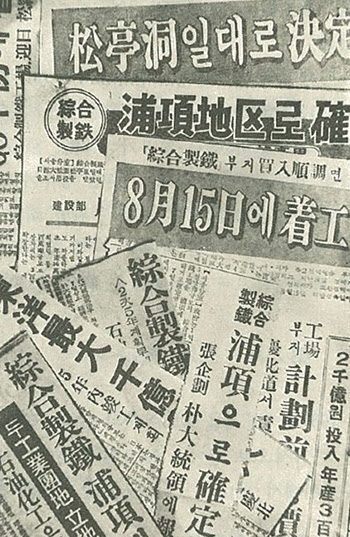

연재일 2014-10-31출처 조선일보 프리미엄조선 연재
1967년 상반기 한국에는 ‘선거 바람’이 드세게 불었다. 5월 11일 대통령선거, 6월 8일 국회의원선거. 아직은 한국의 경제관료들과 KISA가 공식적 파트너로서 함께 끌어나가는 종합제철소 건설은 드세게 불어대는 ‘선거 바람’에 흔들리면서도 박정희의 의지를 튼튼한 다리로 삼아 가야 할 길을 지키며 앞으로 나아가고 있었다.
KISA가 다시 약속한 대로 7월에 종합제철소를 착공하려면 입지 선정을 더 늦출 수 없는 일이었다. 한국정부는 벌써부터 기본 자료들을 준비해놓고 있었다.
당초에는 동해안의 삼척, 묵호, 속초, 포항과 포항의 북방 20km에 위치한 월포, 울산과, 남해안의 부산, 진해, 마산, 삼천포, 여수, 보성, 목포, 서해안의 군산, 장항, 비인, 아산, 인천 등 18개 지역이 거론됐으나, 1967년 2월 미국 코퍼스사 기술진은 삼천포와 울산을 가장 유력한 후보지로 천거했다. 울산은 곧 제외되었다. 제철소까지 유치하기에 울산공단은 협소하다는 의견이 지배적이었던 것이다.
후보지들의 공통점은 모두가 바다를 끼고 있는 ‘임해(臨海)’ 지역이었다. 1965년 6월 일본 가와사키제철 니시야마 사장이 박태준과 둘이서 한국의 제철소 입지 후보지를 방문한 당시에 충고해준 핵심의 하나였던 바로 그 ‘임해’였다(연재 25회 참조).
5월 11일, 제6대 대통령선거가 실시된 바로 그날, 건설부가 한국종합기술개발공사와 1개월 기간으로 삼천포, 포항, 월포, 군산, 보성 등 5개 후보 지역에 대한 ‘현지조사 및 비교검토’를 위한 용역계약을 체결했다. 부지조성, 항만, 공업용수, 전력 인입, 해안 길이 등이 주요 대상이었다. 이제 후보지 선정에 남은 가장 중요한 과제는 선거 바람이 몰아치는 한복판에서 어떡하든 정치적 외풍과 무관하게 ‘과학적’인 결정을 내리면서 정치적 잡음을 최소화하는 일이었다.
박정희 후보와 윤보선 후보의 재대결. 1967년의 대선 결과는 1963년에 비해 판이해졌다. 4년 전에는 박 후보가 윤 후보를 아슬아슬하게 역전승했지만, 이번엔 박 후보가 유효투표의 51.4%를 획득하여 41%를 얻는 데 그친 윤 후보를 압도했다. 도시지역 득표율에서도 박 후보가 윤 후보를 앞질렀다. 무엇보다 ‘경제개발’에 대한 국민적 지지를 반영한 결과였다.

6월 21일 종합제철소 부지 선정에 대한 용역결과 보고서가 나왔다. 부지조성, 공업용수, 항만, 전력 등 4개 부문을 집중적으로 검토한 결과 ‘포항(浦項)’이 1위를 차지했다. 구체적인 위치는 영일만(迎日灣) 안쪽으로, 남한 10대 하천에 꼽히며 일찍이 찬란한 신라문화의 젖줄이 되었던 형산강 하구 옆의 모래대지였다.
신라시대 때(제8대 아달라왕 4년, 157년) 영일만 바닷가에 살고 있던 ‘연오랑 세오녀’ 부부가 일본으로 건너가 일본에 빛(문명)을 전하고 그곳에서 왕과 왕비로 추대되었다는, 신라인의 왜국에 대한 자긍심이 함축된, 『삼국유사』에서 그 책을 빛내주는 「연오랑 세오녀」 설화의 무대이기도 했다.
그 영일만 모래대지에는 일찍이 종합제철소 건설을 예언한 것 같은 시(詩) 한 편도 전해 내려오고 있었다. 정확한 연대는 미상이지만, 조선 후기 풍수지리가로 알려진 이성지(李聖智)가 영일만 백사장을 둘러보고 남긴 시(詩) 한 수라고 한다.
竹生魚龍沙 어링불에 대나무가 나면
可活萬人地 수만 사람이 살 만한 땅이 된다
西器東天來 서양문물이 동쪽나라로 올 때
回望無沙場 돌아보니 모래밭이 없어졌구나
‘어룡사’란 그 백사장의 이름이다. 포항 사람들은 바다와 붙은 백사장을 ‘불’이라 했다. 그래서 어룡사는 ‘어룡불’로 불렸고, 그것이 간이화 발음으로 ‘어링불’이 되었다. ‘죽’은 제철공장의 숱한 ‘굴뚝’을 비유하고, ‘서기’라는 서양문명은 물론 ‘종합제철소’를 뜻한다. 몇 년 뒤에 일어나는 상전벽해지만, 시의 예언대로 과연 ‘어링불’은 가뭇없이 사라지고 높다란 굴뚝들이 솟아오른다.
종합제철소 부지 선정에는 정치권력의 치열한 유치경쟁이 개입했으나 비정치적이고 과학적인 결정이 이뤄졌다. 박태준은 어떻게 했을까? 여전히 종합제철에 대한 아무런 공식적 직함이 없고 그래서 관료들의 회의에 직접 참석한 적도 없었던 박태준은 어떻게 했을까? 벌써 2년 전에 박정희의 특명을 받아둔 박태준은 박정희의 뜻과 더불어 정치논리가 객관성‧공정성‧합리성을 깔아뭉개는 것을 막아내는 데 앞장섰다.
제철소는 입지 선정이 곧 성패와 직결된다는 특성을 확실히 공부해둔 사람으로서 확실한 목소리를 내지 않을 수 없었다. 이 대목은 해군 제독을 지낸 이맹기의 증언을 인용하자. 안상기가 엮은 책 『우리 친구 박태준』에서 이맹기는 이렇게 회고했다.
<다른 많은 사람들은 포항이 아닌 곳을 지목했다. 경제기획원은 삼천포를 지목했다. 박태준은 박 대통령에게 포항이 제철소가 들어서야 할 적지라고 강력하게 주장했다. 당연히 다른 지역을 천거한 각료나 의원들로부터 미움을 살 수밖에 없었다. 그의 주장은 후에 입증되었다시피 정말 타당했다. 최종 선정지가 포항으로 결정된 이유 가운데 하나로서, 무엇보다 박태준에 대한 박 대통령의 깊은 신뢰를 빼놓을 수 없을 것이다.>

1970년 4월 1일 포항제철 착공에 즈음하여 일본 3대 제철회사의 엔지니어들로 짜인 일본기술단(JG)의 초대 단장으로서 오랜 기간을 영일만에서 생활하게 되는 아리가는 이렇게 증언했다
<영일만 제철소 부지의 지형, 수리(水利), 해상(海象), 기상조건 등 상세한 데이터를 조사하면서 나는 진심으로 여기에다 제철소를 건설하고 싶다는 의욕이 솟구쳐 올랐다. 일본의 제철소들이나 세계의 많은 제철소들을 보아왔지만, 임해(臨海) 제철소의 입지조건을, 특히 자연조건을 이토록 완전하게 갖춘 곳은 본 적이 없었다. 누가 어떻게 조사해서 이 지역을 선택한 것인가? KISA가 구성되기 전부터 박태준과 접촉이 있었던 가와사키제철의 상무이사 우에노 나가미쓰의 조언이 큰 영향을 미쳤을 것으로 생각한다.>
종합제철 부지 선정은 재미난 일화도 남겼다. 정치적 이해관계를 뛰어넘은 박태준도 가장 적합하다고 강하게 건의하는 ‘포항’을 택하기 위한 박정희의 기지(機智)가 돋보이는데, 조갑제의 『박정희』에는 다음과 같은 장면도 등장한다.
<당시 정계 실력자들 사이에서는 종합제철소 유치경쟁이 치열했다. 충남 비인은 김종필 의장의 연고지, 울산은 이후락 실장의 고향, 삼천포는 박 대통령의 대구사범 동창생이자 재계의 막후인물인 서정귀의 연고지 하는 식이었다. 포항만은 아무도 미는 사람이 없었다. 정부가 후보지 18개소를 대상으로 조사해보니 포항이 가장 적합한 곳으로 나타났다. 어느 날 박 대통령은 황병태 국장을 부르더니 김포로 가는 자신의 차에 동승하게 했다. 차중에서 대통령은 황병태의 무릎을 잡으면서 말했다.
“황 국장, 소신대로 이야기해 주어야겠어. 종합제철 입지를 놓고 말이 많은데 어디가 제일 좋아?”
“다른 데는 미는 사람들이 있는데…. 사실상 포항이 제일 바람직한 것으로 판단됩니다. 미국 용역회사 보고서도 수심이 깊은 포항이 제일 좋다고 합니다.”
“알았네. 포항은 미는 사람이 없으니 자네가 미는 걸로 하지. 나중에 경제동향보고회의 때 자네를 부를 테니, 그때 소신대로 이야기하게.”
며칠 뒤 월례 경제동향보고가 청와대에서 열렸다. 황병태는 맨 뒷자리에 있었다. 보고를 경청하고 지시를 내리던 박 대통령이 갑자기 “뒤에 황국장 있나. 이리 나오게”라고 말했다.
“요새 종합제철소 입지를 둘러싸고 의견이 분분한 것 같은데 어떤가.”
“실무적 입장에서는 포항이 적지라고 판단됩니다.”
“왜?”
“바다 수심이 깊어 배가 드나들기 용이하고….”
황 국장은 미리 준비한 대로 자세하게 설명해갔다. 다 듣고 나서 박 대통령이 말했다.
“좋아. 그러면 포항으로 하지.”
아무도 이견을 말하지 못했다.>

종합제철소 건설에 유력 정치인의 이해관계를 차단하려는 박정희. 1961년부터 장장 7년에 걸친 노심초사와 굴욕과 인내의 시간을 이겨내고 마침내 종합제철소를 포항에 건설하기로 결정한 박정희. 이제 그에게는 가장 중요한 최후의 선택이 남아 있었다. 누구에게 맡길 것인가? 어떤 인물에게 한국 산업화의 명운을 건 그 막중한 국가대업의 실질적인 창업 대임을 맡길 것인가? 그의 머리와 가슴은 이미 확실한 답을 알고 있었다.
그의 특명에 따라 지난 2년여 동안 종합제철 건설의 계획단계부터 깊이 관여해오고 있으나 여전히 ‘대한중석 사장일 뿐’인 박태준이었다.